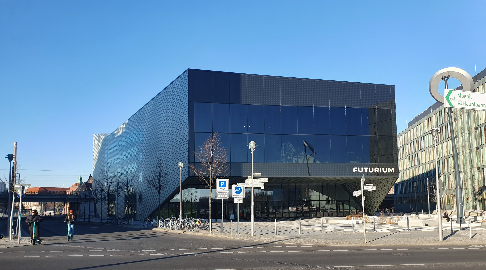

Warum es uns gibt
Wenn wir Glück haben, werden wir in einer Familie hineingeboren, in der wir wertgeschätzt werden,
Vertrauen und Empathie lernen, und in der wir hemmungslos zusammen feiern, trauern, spielen
und philosophieren können.
Was macht aber eine Person, wenn diese Familie fehlt?
Die Tatsache einfach als eine dauerhafte Wahrheit annehmen und sich mit der Einsamkeit abfinden?
Nein, das wollen wir für uns und für andere wie uns nämlich nicht.
Stattdessen glauben wir, dass wenn wir andere Menschen finden,
die Ähnliches anbieten und geben wollen wie wir ihnen,
wird es funken.
Wir möchten gerne Zeit und Raum schaffen, damit tiefgründige und dauerhafte Beziehungen
zwischen Menschen, die selbst wenig oder keine Familie haben, entstehen können.
Mit diesem Vorsatz organisieren wir regelmäßige Treffen, um Menschen mit ähnlichen Wünschen zusammenzubringen,
zusammenzubringen, ohne Druck und Zwang.
Jede*r ist bei unseren Treffen willkommen. Wir freuen uns auf Dich, und auch auf Deine Gedanken und Einsichten
zum Thema Wahlverwandtschaften!
Organisatorisch gehören wir zu der Wahlverwandtschaften e.V. mit Sitz in Minden und sind
die offizielle Ortsgruppe für Berlin.

Unser nächstes Treffen:
16. Juli 2022 um 14:00,
vor dem Futurium
Alexanderufer 2, 10117 Berlin
Eintritt ins Futurium ist kostenlos.
Wir schauen uns die Ausstellung an, und wer möchte,
kann anschließend zum Zollpackhof in direkter Nähe mitlaufen
und dort eine Kleinigkeit essen und trinken.
Fragen oder Ideen?
Dann schreib uns gerne an!